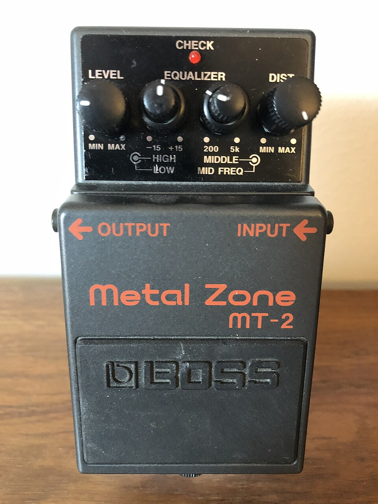

Guide to Effect Pedals
An effects unit is a device that alters the sound of an audio source, usually an instrument. These devices use analog or digital circuitry to process the incoming signal and output it to the next device in the chain, which can be an amplifier, audio recording interface, or even another pedal. Musicians can use these effects either in the recording studio or live on stage to produce a sound unit to them.
Audio effects have their origin in the recording studios of the early 20th century. These early effects relied on physical phenomena instead of electronics, such as the Leslie speaker, which worked by rotating a set of baffles in front of a speaker to produce a warbling effect. In the 1960's transistors started to be used to produce a much wider variety of effects, and in a small enough form factor to be easily carried.
Examples of effects include distortion, reverb, compression, delay, chorus, and many more which cannot be easily described. In addition, some pedals are more for utility. For example, tuners and noise gates. Click on Pedal Types in the bar above to learn more about specific effects!

The most common form of effects unit is a stompbox, shown here. The device typically has one or more foot switches that the musician can step on, thus the name. There can also be dials on the pedal for adjusting settings specific to the effect, such as gain or mix.

This is an example of a typical pedalboard layout. Each individual musician can customize their board with whatever pedals are needed to produce the desired sound. There is a power supply on the board that provides power to all of the pedals, typically 9 VDC.